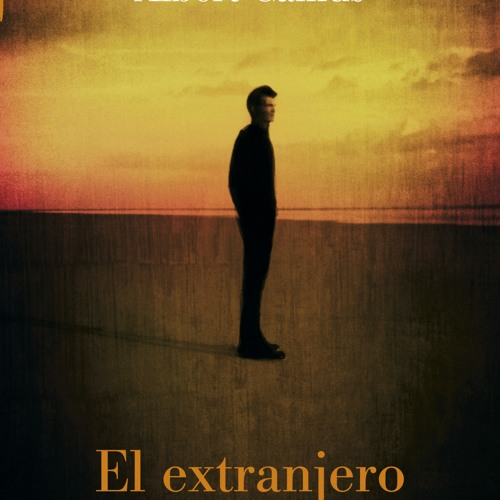

El asilo de ancianos está en Marengo, a ochenta kilómetros de Argel. Tomaré el autobús a las dos y llegaré por la tarde. De esa manera podré velarla, y regresaré mañana por la noche. Pedí dos días de licencia a mi patrón y no pudo negármelos ante una excusa semejante. Pero no parecía satisfecho. Llegué a decirle: «No es culpa mía.» No me respondió. Pensé entonces que no debía haberle dicho esto. Al fin y al cabo, no tenía por qué excusarme.
Tomé el autobús a las dos. Hacía mucho calor. Comí en el restaurante de Celeste como de costumbre. Todos se condolieron mucho de mí, y Celeste me dijo: «Madre hay una sola.» Cuando partí, me acompañaron hasta la puerta. Me sentía un poco aturdido pues fue necesario que subiera hasta la habitación de Manuel para pedirle prestados una corbata negra y un brazal. El perdió a su tío hace unos meses.